Lecture 5: Introduction to Recurrent Neural Networks (RNNs)#
UBC Master of Data Science program, 2024-25
Lecture plan, imports, LO#
Imports#
import IPython
from IPython.display import HTML, display
Learning outcomes#
From this lecture you will be able to
Explain the motivation to use RNNs.
Explain how an RNN differs from a feed-forward neural network.
Explain three weight matrices in RNNs.
Explain parameter sharing in RNNs.
Explain how states and outputs are calculated in the forward pass of an RNN.
Explain the backward pass in RNNs at a high level.
Specify different architectures of RNNs and explain how these architectures are used in the context of NLP applications.
Broadly explain character-level text generation with RNNs.
Specify the shapes of weight matrices in RNNs.
Carry out forward pass with RNNs in
PyTorch.Explain stacked RNNs and bidirectional RNNs and the difference between the two.
❓❓ Questions for you#
What’s your mood today?#
Think about how you’re feeling right now. Pick one:
(A) Happy 😊
(B) Sad 😞
(C) Not so simple. It’s a mix (e.g., maybe a bit happy, kind of excited, but also tired 😅)
In HMMs, we were assuming discrete states (e.g., discrete set of moods).

But real human moods, like real-world states, are rarely that simple.
Today we’ll start exploring models that don’t force us to pick a single simple state, but instead allow us to represent subtle, continuous, and evolving internal states, much like how you actually feel when juggling multiple things.
1. Motivation#
RNN-generated music!
### An example of a state-of-the-art language model
url = "https://www.youtube.com/embed/dMhQalLBXIU"
IPython.display.IFrame(url, width=500, height=300)
Language is an inherently sequential phenomenon.
In lab2, you identified phonemes associated with a sequence of sound waves.
This temporal nature of language is reflected in the metaphors used to describe language
flow of conversation, news feeds, or twitter streams
Beyond language, there are many examples of sequences in the wild.
Financial markets
Medical signals such as ECGs
Biological sequences encoded in DNA
Patterns of climate and patterns of motion
Recall that in this course, our focus is on models for sequential data.
What properties do we want when we model sequences?
[ ] Order matters
[ ] Variable sequence lengths
[ ] Capture long distance dependencies
So far we have seen two models to process sequential data
Markov models
And more flexible hidden Markov models
How do these models perform on the above criteria?
Recall the language modeling task, the task of predicting the next word given a sequence.
What’s the probability estimate of an upcoming word?
\(P(w_t|w_1,w_2,\dots,w_{t-1})\)
When we used Markov models for this task, we made Markov assumption.
Markov model: \(P(w_t|w_1,w_2,\dots,w_{t-1}) \approx P(w_t|w_{t-1})\)
Markov model with more context: \(P(w_t|w_1,w_2,\dots,w_{t-1}) \approx P(w_t|w_{t-2}, w_{t-1})\)
In lab 1, you generated text with Markov models which captured some temporal aspect when generating text.
With \(n=1\), we considered one previous word as context when generating text.
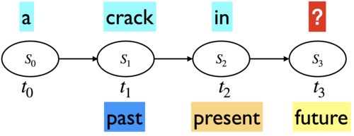
With \(n=2\), we considered two previous words as context when generating text.
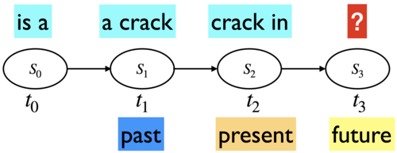
With \(n=3\), we considered three previous words as context when generating text.
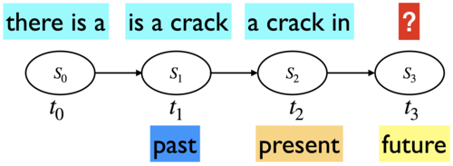
In 2006, Google released 5-grams extracted from the internet.
We processed 1,024,908,267,229 words of running text and are publishing the counts for all 1,176,470,663 five-word sequences that appear at least 40 times. There are 13,588,391 unique words, after discarding words that appear less than 200 times.
Imagine how big the transition matrix will be for 1,176,470,663 states!
Markov models do not have memory beyond the previous 2, 3 or maximum \(n\) steps and when \(n\) becomes larger, there is sparsity problem.
Also, they have huge RAM requirements because you have to store all ngrams.
Overall, modeling of probabilities of sequences with Markov models doesn’t scale well.
Would a Markov model able to predict a reasonable next word in the sequence below?
I am studying data science at the University of British Columbia in Vancouver because I want to build a career in ___.
Here are some completions given by ChatGPT for the same sequence.
Provide four completions for the sequence I am studying data science at the University of British Columbia in Vancouver because I want to build a career in
analytics and machine learning
health care analytics and research
environmental data analysis and climate change research
social media analytics and public opinion research
How do large language models such as ChatGPT make such good predictions about next words?
With neural architectures
In the remaining lectures in this course, we will focus on neural sequence modeling.
1.1 Activity: Feedforward neural networks for sentiment analysis#
Suppose you are performing sentiment analysis on movie reviews. Your goal is to predict whether a given movie review expresses a positive (👍) or negative (👎) sentiment. You are considering a feedforward neural network for this task.
Consider the following review:
This movie was not boring at all. It was fascinating and thrilling from start to finish.
How would you encode the input features?
What would be the network architecture?
Reflect on the limitations of using a feedforward neural network for this task. What aspects of language might it struggle to capture?

It’s possible to use feedforward neural networks for sequence processing but they are not inherently designed to handle sequences because they lack ability to capture temporal dependencies.
Reminder: In feed-forward neural networks,
all connections flow forward (no loops)
each layer of hidden units is fully connected to the next
We pass fixed sized vector representation of text (e.g., representation created with
CountVectorizer) as input.We lose the temporal aspect of text in this representation.
Let’s simplify the presentation of the feed-forward network above.
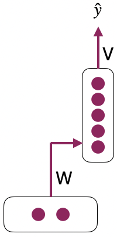
1.2 RNNs introduction#
RNNs are a kind of neural network model which use hidden units to retain information over time.
RNNs can help us with the limited memory problem of Markov models.
Unlike Markov models, this approach does not impose a fixed-length limit on this prior context; the context embodied in the previous hidden layer can include information extending back to the beginning of the sequence.
RNN Activity
RNN is like your brain reading a sentence word by word.
Input at each time step: The current word you read
Hidden state: Your current mental understanding
Output: Your interpretation, reaction, or prediction at that point in time
Two rows of students:
Front row = input layer (observations at each time step)
Back row = hidden state at each time step
Each column is a time step (0 through 4)
So we’ll have 4 front-row students: \(x_0\) to \(x_3\)
And 4 back-row students: \(h_0\) to \(h_3\)
At time step 0:
Front-row student \(x_0\) gets a word
They pass it to the back-row student behind them (\(h_0\)).
At time step 1 (and beyond):
The front-row student (e.g., \(x_1\)) gets a new word
The back-row student (e.g., \(h_1\)) receives:
The current input from the front-row student (e.g., \(x_1\))
Whatever “memory” is passed from the previous hidden state (e.g., \(h_0\))
\(h_1\) combines this (e.g., by writing a summary phrase or combining keywords).
Repeat until time step 3 or 4.
Final time step: \(h_3\) summarizes what they remember (e.g., predicts next word, gives the “mood” of the sentence, etc.)
How can a temporal dimension be added to a feedforward neural network?
For word representation with a vector of size 4, a single feedforward neural network can be used for prediction.
For 2 words, two separate feedforward neural networks can be used together.
For 3 words, three separate feedforward neural networks can be used together.
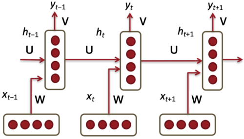
(Credit: Stanford CS224d slides)
How to connect multiple feedforward networks?
Make connections between hidden layers.
The network typically consists of input, hidden layer, and output. The hidden layer is connected to itself for recurrent connections.
Sequences can be processed by presenting one element at a time to the network.
2. RNN details#
2.1 RNN presentations#
Unrolled presentation
Recursive presentation
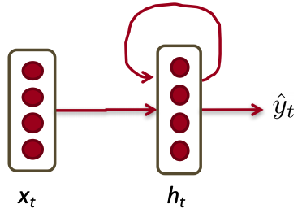
The key distinction between non-recurrent and recurrent architectures is the inclusion of a new set of weights connecting the previous hidden layer to the current hidden layer.
The hidden layer from the previous time step acts as a form of “memory” that influences decisions made at later time steps.
These weights determine how the network incorporates the previous context when computing output for the current input.
RNN as a graphical model
RNNs can be visualized as a graphical model. The states below are the hidden layers in each time step.
Somewhat similar to hidden Markov models (HMMs)
But a hidden state in an RNN is continuous valued, high dimensional, and much richer.
Each state is a function of the previous state and the input.
A state contains information about the whole past sequence.
\(h_t = g(x_t, x_{t-1}, \dots, x_2, x_1)\)
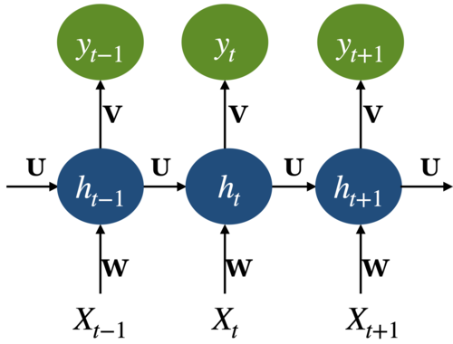
Adding a temporal dimension and the recursion make RNNs appear to be complex. But they are not all that different from standard feedforrward neural networks.
Given an input vector and the values for the hidden layer from the previous time step we are still performing standard feedforward calculations.
The most significant change lies in the new set of weights \(U\) that connect the hidden layer from the previous time step to the current hidden layer.
As with the other weights in the network, these connections are trained via a variant of backpropagation.
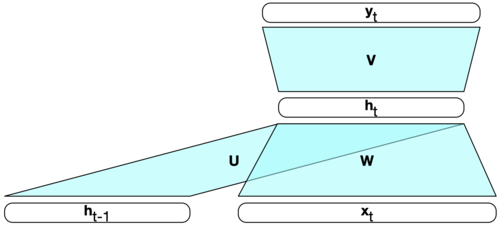
2.2 Parameter sharing#
What are the parameters of this model? There are three weight matrices.
Input to hidden weight matrix: \(W\)
Hidden to output weight matrix: \(V\)
Hidden to hidden weight matrix: \(U\)
The key point in RNNs: All weights between time steps are shared.
This allows the model to learn patterns that are independent of their position in the sequence
Dimensionality of different weight matrices Lets consider an example:
Suppose input vector \(x_t\) is of size 300 (i.e., \(x_t \in \mathbb{R}^{300}\))
Suppose the hidden state vector is of size 100 (memory of the network) (i.e., \(h_t \in \mathbb{R}^{100}\))
Suppose the output vector \(y_t\) is of size 60 (i.e., \(y_t \in \mathbb{R}^{60}\))
\(W_{100 \times 300}\), \(V_{60\times 100}\), \(U_{100\times 100}\)
Input size: Suppose \(x \in \mathbb{R}^{d_{in}}\)
Output size: Suppose \(y \in \mathbb{R}^{d_{out}}\)
Hidden size: Suppose \(h \in \mathbb{R}^{d_h}\)
Three kinds of weights: \(W_{d_{h}\times d_{in}}\), \(V_{d_{out}\times d_{h}}\), \(U_{d_h\times d_h}\)
You may see transpose of these matrices in some notations.
3. Forward pass in RNNs#
The forward inference in RNNs is very similar to what you have seen with feedforward networks.
Given an input \(x_t\) at timestep \(t\), how do we compute the new hidden state \(h_{t}\) and output \(y_t\)?
3.1 Computing the new state \(h_t\)#
Multiply the input \(x_t\) with the weight matrix between input and hidden layer (\(W\)) and the state or the hidden layer from the previous time step \(h_{t-1}\) with the weight matrix between hidden layers (\(U\)).
Add these values together.
Add the bias vector and pass the result through a suitable activation function \(g\).
3.2 Computing the output \(y_t\)#
Once we have the value for the new state \(h_t\), we can calculate the output vector \(y_t\) by multiplying \(h_t\) with the weight matrix \(V\) between the hidden layer and the output layer, adding the bias vector, and applying an appropriate activation function \(f\) the multiplication.
Typically, we are interested in soft classification. So computing \(y_t\) involves a softmax computation which provides a probability distribution over the possible output classes.
Summary
So in the forward pass we compute the new state \(h_t\) and the output \(y_t\) for all time steps in a sequence, as shown below.
Forward pass pseudo code
We compute this for the full sequence.
Given: \(x\), network
Intialize \(h_0\)
for \(t\) in 1 to length(input sequence \(x\))
\(h_t = g(Uh_{t-1} + Wx_t + b_1\))
\(y_t = \text{softmax}(Vh_t + b_2)\)
Note that the matrices \(U\), \(V\) and \(W\) are shared across time and new values for \(h_t\) and \(y_t\) are calculated at each time step.
3.3 RNN Forward pass with PyTorch#
See the documentation here.
import torch
import torch.nn as nn
from torch.nn import RNN
---------------------------------------------------------------------------
ImportError Traceback (most recent call last)
Cell In[3], line 1
----> 1 import torch
2 import torch.nn as nn
3 from torch.nn import RNN
File ~/miniforge3/envs/jbook/lib/python3.12/site-packages/torch/__init__.py:367
365 if USE_GLOBAL_DEPS:
366 _load_global_deps()
--> 367 from torch._C import * # noqa: F403
370 class SymInt:
371 """
372 Like an int (including magic methods), but redirects all operations on the
373 wrapped node. This is used in particular to symbolically record operations
374 in the symbolic shape workflow.
375 """
ImportError: dlopen(/Users/kvarada/miniforge3/envs/jbook/lib/python3.12/site-packages/torch/_C.cpython-312-darwin.so, 0x0002): Library not loaded: @rpath/libgfortran.5.dylib
Referenced from: <0B9C315B-A1DD-3527-88DB-4B90531D343F> /Users/kvarada/miniforge3/envs/jbook/lib/libopenblas.0.dylib
Reason: tried: '/Users/kvarada/miniforge3/envs/jbook/lib/libgfortran.5.dylib' (duplicate LC_RPATH '@loader_path'), '/Users/kvarada/miniforge3/envs/jbook/lib/libgfortran.5.dylib' (duplicate LC_RPATH '@loader_path'), '/Users/kvarada/miniforge3/envs/jbook/lib/libgfortran.5.dylib' (duplicate LC_RPATH '@loader_path'), '/Users/kvarada/miniforge3/envs/jbook/lib/libgfortran.5.dylib' (duplicate LC_RPATH '@loader_path'), '/Users/kvarada/miniforge3/envs/jbook/lib/libgfortran.5.dylib' (duplicate LC_RPATH '@loader_path'), '/Users/kvarada/miniforge3/envs/jbook/lib/libgfortran.5.dylib' (duplicate LC_RPATH '@loader_path'), '/Users/kvarada/miniforge3/envs/jbook/lib/libgfortran.5.dylib' (duplicate LC_RPATH '@loader_path'), '/Users/kvarada/miniforge3/envs/jbook/lib/libgfortran.5.dylib' (duplicate LC_RPATH '@loader_path'), '/Users/kvarada/miniforge3/envs/jbook/lib/python3.12/site-packages/torch/lib/libgfortran.5.dylib' (no such file), '/Users/kvarada/miniforge3/envs/jbook/lib/python3.12/site-packages/torch/../../../libgfortran.5.dylib' (duplicate LC_RPATH '@loader_path'), '/Users/kvarada/miniforge3/envs/jbook/lib/python3.12/site-packages/torch/lib/libgfortran.5.dylib' (no such file), '/Users/kvarada/miniforge3/envs/jbook/lib/python3.12/site-packages/torch/../../../libgfortran.5.dylib' (duplicate LC_RPATH '@loader_path'), '/Users/kvarada/miniforge3/envs/jbook/bin/../lib/libgfortran.5.dylib' (duplicate LC_RPATH '@loader_path'), '/Users/kvarada/miniforge3/envs/jbook/bin/../lib/libgfortran.5.dylib' (duplicate LC_RPATH '@loader_path'), '/usr/local/lib/libgfortran.5.dylib' (no such file), '/usr/lib/libgfortran.5.dylib' (no such file, not in dyld cache)
Creating an RNN object
We are creating an RNN with
only one hidden layer
input of size 20 (e.g., imagine word vectors of size 20)
hidden layer of size 10
rnn = nn.RNN(20, 10, 1) # input size, hidden_size, number of layers
Input
The input is going to be sequences (e.g., sequences of words)
We need to provide the sequence length of the sequence and the size of each input vector.
For example, suppose you have the following sequence and you are representing each word with a 20-dimensional word vector, then your sequence length is going to be 5 and input size is going to be 20.
Cherry blossoms are beautiful .
inp = torch.randn(5, 20) # sequence length, input size
inp
tensor([[-0.7449, 0.1666, 0.3951, -0.8870, -0.6183, -0.9801, 1.3899, 0.1448,
-0.5490, 1.0835, 1.6662, 0.7660, -0.2617, 0.9894, 1.1245, 1.1661,
-0.4772, -1.8159, 0.6064, -0.3212],
[ 1.2073, 0.3854, 0.9935, 0.7480, -0.1274, -0.1711, 0.2687, 0.8226,
0.5294, -0.0513, 0.4434, 1.0118, -0.0085, -0.5724, 0.4837, 0.6713,
0.1026, -0.2679, 0.9887, 0.2314],
[-0.6493, -0.4759, 0.5472, -0.7455, 1.9354, 0.3501, -0.6683, 0.8641,
0.7480, 1.7375, -0.3868, 0.0245, -1.0831, 2.0118, 1.5609, 0.4658,
0.3362, -1.2545, -0.0939, -0.9401],
[-1.7787, -0.2415, -0.3304, 0.2118, -0.4295, 0.5924, -0.3078, 1.2190,
0.2171, -0.5540, 1.6961, 0.1096, -0.5444, -0.3318, -1.4029, -0.7076,
0.6535, -1.7345, -0.0667, -0.0352],
[ 0.9936, 0.3977, 0.5135, 1.2352, 1.8197, -0.6011, -1.2933, 1.5456,
-0.6196, 0.4122, 0.5576, 0.3847, -0.0681, -1.2007, 1.2829, -1.7951,
-1.3169, 0.6187, 0.5400, -1.7226]])
Initial hidden state
At the 0th time step, we do not have anything to remember. So we initialize the hidden state randomly or to 0.0.
Let’s initialize h0.
The shape of h0 is the number of hidden layers and hidden size.
h0 = torch.randn(1, 10) # number of hidden layers, hidden size
h0
tensor([[ 2.2133, -1.4602, -0.9452, -1.6756, -0.9290, -0.2674, -0.2496, -1.5272,
0.9818, 0.6087]])
Calculating new hidden states and output
# PyTorch calculates the output and new hidden states for us for all time steps.
output, hn = rnn(inp, h0)
hn # hidden state for the last time step in the sequence
tensor([[-0.2377, -0.7253, 0.6461, 0.5337, -0.0806, -0.1899, -0.5599, -0.1239,
-0.3421, -0.9366]], grad_fn=<SqueezeBackward1>)
output
tensor([[ 0.7880, -0.8927, 0.8364, -0.9811, -0.0400, 0.9897, -0.3810, -0.7956,
-0.9250, -0.9535],
[ 0.2879, 0.0824, 0.5272, -0.3765, -0.0176, 0.7278, -0.2925, -0.1721,
-0.5300, -0.8516],
[-0.5859, -0.6065, 0.2953, -0.3474, 0.2902, 0.7199, -0.9498, -0.9228,
-0.4398, -0.8357],
[-0.0026, -0.3297, 0.7265, -0.7694, 0.5584, 0.7468, 0.4601, -0.7119,
-0.9104, -0.9363],
[-0.2377, -0.7253, 0.6461, 0.5337, -0.0806, -0.1899, -0.5599, -0.1239,
-0.3421, -0.9366]], grad_fn=<SqueezeBackward1>)
output.shape
torch.Size([5, 10])
By default, tanh activation function is used.
Shapes of the weight matrices
What would be the shapes of weight matrices?
Input to hidden (\(W\))
Hidden to hidden (\(U\))
Weight matrix \(W\) between input to hidden layer:
inp.shape
torch.Size([5, 20])
rnn.state_dict()["weight_ih_l0"].shape # (hidden, input)
torch.Size([10, 20])
Weight matrix \(U\) between hidden layer in time step \(t-1\) to hidden layer in time step \(t\):
h0.shape
torch.Size([1, 10])
rnn.state_dict()["weight_hh_l0"].shape # (hidden, hidden)
torch.Size([10, 10])
Note that the rnn above is calculating the output of the hidden layer at each time step but we are not calculating \(y_t\) in each time step \(t\).
Let’s define a simple RNN for a toy sentiment analysis task.
# Define a toy dataset of sentences and their labels
corpus = [
("I love machine learning and deep learning", 1),
("I hate it when the Jupyter lab kernel dies on me", 0),
("Data cleaning is a tedious task", 0),
("Hidden Markov models are so elegant", 1),
("Nothing is more exciting than uncovering hidden patterns in data", 1),
("Debugging machine learning models can be frustrating", 0),
("Overfitting is a common problem in machine learning models", 0),
("It's rewarding to see your model perform well on unseen data", 1),
("Dealing with missing data is annoying", 0),
("I enjoy learning about neural models for sequence processing", 1)
]
# Tokenization and Vocabulary Creation
from collections import Counter
# Tokenize sentences
tokens = [sentence.lower().split() for sentence, _ in corpus]
vocab = Counter(word for sentence in tokens for word in sentence)
# Create word to index mapping
word_to_idx = {word: i+1 for i, (word, _) in enumerate(vocab.items())} # Starting index from 1 for padding
idx_to_word = {i: word for word, i in word_to_idx.items()}
vocab_size = len(word_to_idx) + 1 # +1 for padding token at index 0
vocab_size
62
# idx_to_word
import torch
from torch.nn.utils.rnn import pad_sequence
# Convert sentences to integer sequences
sequences = [[word_to_idx[word] for word in sentence.lower().split()] for sentence, _ in corpus]
# Pad sequences to have the same length and create tensors
sequence_length = max(len(seq) for seq in sequences) # Get max sequence length for padding
padded_sequences = pad_sequence([torch.tensor(seq) for seq in sequences], batch_first=True)
# Labels
labels = torch.tensor([label for _, label in corpus])
padded_sequences
tensor([[ 1, 2, 3, 4, 5, 6, 4, 0, 0, 0, 0],
[ 1, 7, 8, 9, 10, 11, 12, 13, 14, 15, 16],
[17, 18, 19, 20, 21, 22, 0, 0, 0, 0, 0],
[23, 24, 25, 26, 27, 28, 0, 0, 0, 0, 0],
[29, 19, 30, 31, 32, 33, 23, 34, 35, 17, 0],
[36, 3, 4, 25, 37, 38, 39, 0, 0, 0, 0],
[40, 19, 20, 41, 42, 35, 3, 4, 25, 0, 0],
[43, 44, 45, 46, 47, 48, 49, 50, 15, 51, 17],
[52, 53, 54, 17, 19, 55, 0, 0, 0, 0, 0],
[ 1, 56, 4, 57, 58, 25, 59, 60, 61, 0, 0]])
import torch.nn as nn
class SentimentRNN(nn.Module):
def __init__(self, vocab_size, embedding_dim, hidden_dim, output_dim):
super(SentimentRNN, self).__init__() # the constructor of the parent nn.Module class
# Define an embedding layer:
# This layer will transform the input word indices into dense vectors of a specified size (embedding_dim)
# vocab_size: the size of the vocabulary (number of unique words in your dataset + 1 for padding)
# embedding_dim: the size of the embedding vector for each word
self.embedding = nn.Embedding(vocab_size, embedding_dim)
# Define a simple RNN layer:
# This layer processes the sequences of word embeddings and captures the sequential information
# embedding_dim: the input size to the RNN (size of the word embeddings)
# hidden_dim: the size of the RNN's hidden state
# batch_first=True: specifies that the input and output tensors will be of shape (batch_size, seq_length, feature)
self.rnn = nn.RNN(embedding_dim, hidden_dim, batch_first=True)
# Define a fully connected (linear) layer:
# This layer maps the RNN's hidden state to the output classes (positive or negative sentiment in this case)
# hidden_dim: the size of the RNN's hidden state (input features to this layer)
# output_dim: the number of output classes (2 for binary classification)
self.fc = nn.Linear(hidden_dim, output_dim)
def forward(self, text):
# Forward pass through the embedding layer:
# text: the input text sequences (batch of tokenized and indexed words)
# embedded: the embedded representation of the input text
embedded = self.embedding(text)
# Forward pass through the RNN layer:
# embedded: the sequences of embedded words
# output: the output features from the RNN for each time step (we won't use this here)
# hidden: the final hidden state from the RNN
output, hidden = self.rnn(embedded)
# Assert that the last output of the RNN matches the final hidden state
# This is just a sanity check and is not necessary for the model to function
assert torch.equal(output[:, -1, :], hidden.squeeze(0))
# Forward pass through the fully connected layer:
# We use the final hidden state to predict the sentiment
# hidden.squeeze(0): removes the first dimension of the hidden state to match the input shape expected by the linear layer
# This operation is needed because the RNN layer outputs hidden states with a shape (num_layers, batch_size, hidden_dim),
# but the linear layer expects inputs with a shape (batch_size, hidden_dim)
return self.fc(hidden.squeeze(0))
# Create an instance of our SentimentRNN model, specifying the vocabulary size, embedding dimension,
# hidden dimension (size of the RNN's hidden state), and output dimension (number of classes).
model = SentimentRNN(vocab_size=vocab_size, embedding_dim=100, hidden_dim=128, output_dim=2)
What are the parameters of the model?
from torchsummary import summary
summary(model, input_size=(100, ));
=================================================================
Layer (type:depth-idx) Param #
=================================================================
├─Embedding: 1-1 6,200
├─RNN: 1-2 29,440
├─Linear: 1-3 258
=================================================================
Total params: 35,898
Trainable params: 35,898
Non-trainable params: 0
=================================================================
How are these parameters calculated?
Embedding layer: vocab_size * embedding_dim = 62 * 100
RNN layer: (embedding_dim * hidden_dim) + hidden_dim + (hidden_dim * hidden_dim) + hidden_dim = (100 * 128) + 128 + (128 * 128) + 128 = 29,440
Linear layer: (hidden_dim * output_features) + output_features = (128 * 2) + 2 = 258
from torch.nn.functional import softmax
# Assuming a single batch for simplicity
predictions = model(padded_sequences)
probabilities = softmax(predictions, dim=1)
print(probabilities)
tensor([[0.3753, 0.6247],
[0.3450, 0.6550],
[0.3763, 0.6237],
[0.3779, 0.6221],
[0.3577, 0.6423],
[0.3742, 0.6258],
[0.4037, 0.5963],
[0.5773, 0.4227],
[0.3758, 0.6242],
[0.4018, 0.5982]], grad_fn=<SoftmaxBackward0>)
The probabilities won’t make sense because we have not trained the model.
The training loop will be very similar to that of feedforward neural networks. However, I won’t implement it for this toy example, as it won’t learn much from our tiny corpus.

❓❓ Questions for you#
Exercise 5.1: Select all of the following statements which are True (iClicker)#
(A) RNNs pass along information between time steps through hidden layers.
(B) RNNs are appropriate only for text data.
(C) At each time step in an RNN, we use a unique hidden state (
h), a unique input (X), but we reuse the sameUmatrix of weights.(D) The number of parameters in an RNN language model would grow with the number of time steps.
(E) The hidden state at the current time step in an RNN depends only on the input data at the current time step and the hidden state from the previous time step.
4. Training RNNs#
RNN is a supervised machine learning model. Similar to feedforward networks, we’ll use a
training set
a loss function
backpropagation to obtain the gradients needed to adjust the weights in these networks
We have 3 sets of weights (and the corresponding bias terms) to update
\(W \rightarrow \) the weight matrix between input layer and hidden layer
\(U \rightarrow \) the weight matrix between previous hidden layer to current hidden layer
\(V \rightarrow \) the weight matrix between hidden layer and output layer
We want to assess the error occurring at time step \(t\).
To compute the loss function for the output at time \(t\) we need the hidden layer from time \(t-1\).
The hidden layer at time \(t\) influences both the output at time \(t\) and the hidden layer at time \(t+1\).
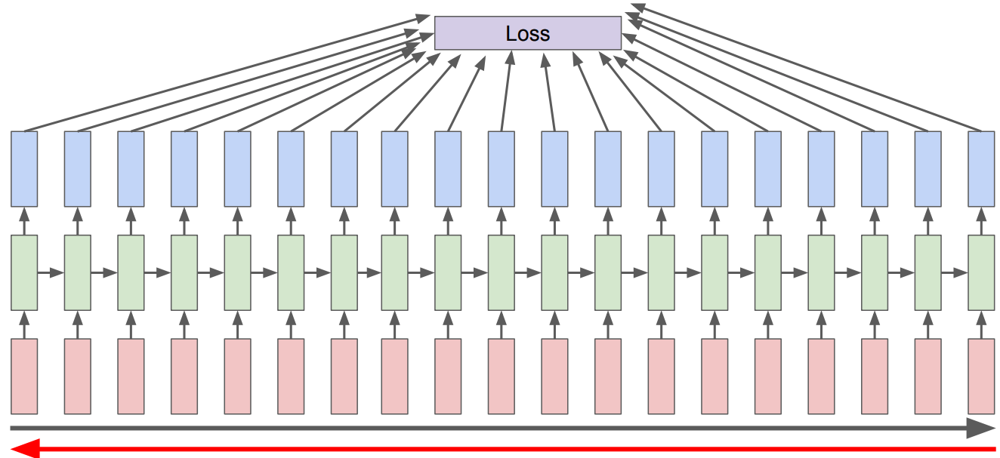
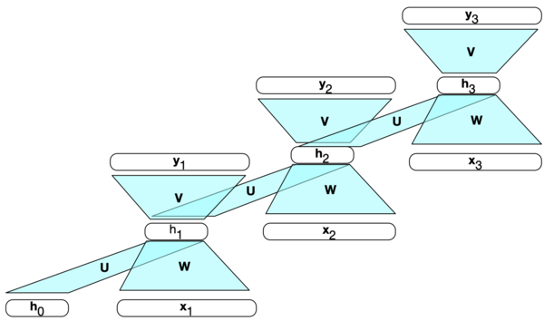
To assess the error occurring to \(h_t\), we need to know its influence on both the current output and the ones that follow.
This is different than the usual backpropagation. We need to tailor backpropogation algorithm to this situation. In RNNs we use a generalized version of Backpropogation called Backpropogation Through Time (BPTT)
The loss calculation depends upon the task and the architecture we are using.
The overall loss is the summation of losses at each time step.
See the code for the above in ~112 lines of Python written by Andrej Karpathy. The code has only
numpydependency.
5. RNN applications#
We have seen the basic RNN architecture below.
But a number of architectures are possible, which makes them a very rich family of models.
A number of possible RNN architectures
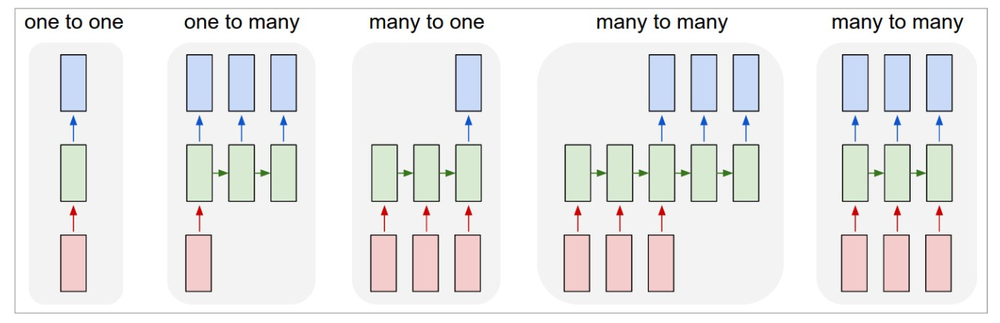
Let’s see how can we apply it to three different types of NLP tasks:
Sequence labeling (e.g., POS tagging)
Sequence classification (e.g. sentiment analysis or text classification)
Text generation
5.1 Sequence labeling#
The task is to assign a label from a fixed set of labels to each element in the sequence.
Part-of-speech tagging
Named entity recognition
Many-to-many architecture
Inputs are usually pre-trained word embeddings and outputs are tag probabilities generated by a softmax layer over the given tagset.
The RNN block is an abstraction representing an unrolled simple RNN consisting of an input layer, hidden layer and output layer at each time step and shared weight matrices \(U\), \(W\), and \(V\).
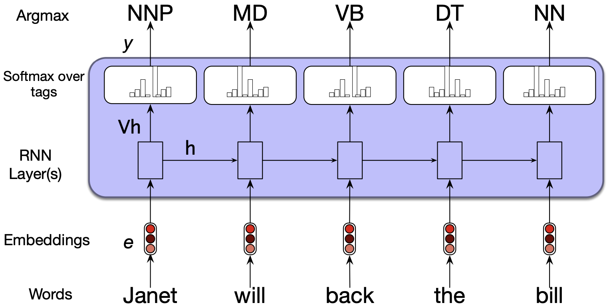
5.2 Sequence classification#
We have done text classification such as sentiment analysis or spam identification before with traditional ML models, where we ignored the temporal nature of language.
These are actually sequence classification tasks where we want to map a sequence of text to a label from a small set of labels (e.g., positive, negative, neutral).
To apply RNNs in this setting, we take the text to be classified and pass one word at a time generating a new hidden layer at each time step. We can then take the hidden layer from the last time step, \(h_n\), which has the compressed representation of the entire sequence. We pass this representation through a feedforward neural network which chooses a class via a softmax.
This is a many-to-one RNN architecture.

Similar to the sequence labeling example, we can also pass word embeddings as input.
Note that in this approach we do not have immediate outputs at each time step and we do not need to compute \(y\) at each time step. We only have an output at the last time step.
So there won’t be loss terms associated with each time step.
The loss function used to train the weights in the network is entirely based on the final text classification task.
We will compare the output of the softmax layer of the feed-forward classifier and the actual \(y\) to calculate the loss (e.g., cross-entropy loss) and this loss will drive the training.
The error signal is backpropagated all the way through the weights in the feed-forward classifier, through its input, which is the hidden layer output of the last time step, through the three sets of RNN weights: \(U\), \(V\), and \(W\).
5.3 Text generation#
The idea is similar to text generation with Markov models.
We start with a seed. We then continue to sample words conditioned on our previous choices until we reach a pre-determined desired length of a sequence or end-of-sequence token is generated.
In the context of RNNs
We start with a seed. In the example below, we are starting with a special beginning of sequence token <s>.
We use embedding representation of this token and pass it to the RNN.
We sample a word in the output from the softmax distribution.
We use this sampled word as the input in the next time step and then sample the next word in the same fashion.
We continue this until the fixed length limit or the end of the sentence marker is reached.
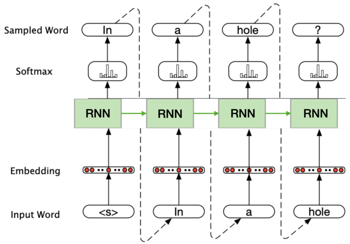
The same idea can be used for music generation.
You can find a toy example of of RNN text generation with PyTorch in AppendixC.
5.4 Image captioning#
The same idea can be used for more complicated applications such as machine translation, summarization, or image captioning.
The idea is to prime the generation component with an appropriate context.
For example, in image captioning we can prime the generation component with a meaningful representation of an image given by the last layer in CNNs.
You’ll work on this application in the lab next week.
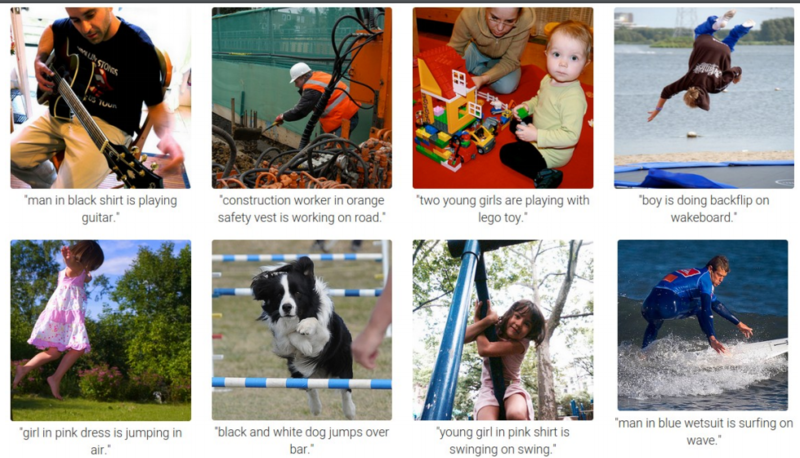
6. Stacked and Bidirectional RNN architectures#
We have seen a simple RNN with one hidden layer.
But RNNs are quite flexible.
Two common ways to create complex networks by combining RNNs are:
Stacked RNNs
Bidirectional RNNs
6.1 Stacked RNNs#
In the examples thus far, the input of RNNs was a sequence of word or character embeddings. We were passing the output of the RNN layer to the output layer and the outputs have been vectors useful for predicting next words, tags, or sequence labels.
But nothing prevents us from using the sequence of outputs from one RNN as an input sequence to another one.
These are called stacked RNNs which consist of multiple networks where the output of one layer serves as the input to a subsequent layer.
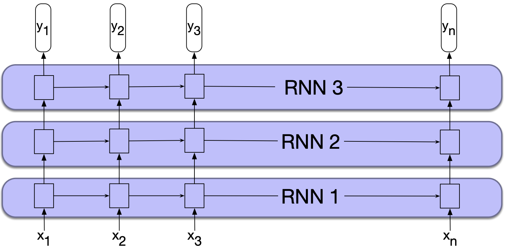
Stacked RNNs generally outperform single-layer networks.
The network learns a different level of abstraction at each layer.
You can optimize your network for number of layers for your specific application and dataset.
But remember that more layers means higher training cost.
6.2 Bidirectional RNNs#
The RNN uses information from the prior context to make predictions at time \(t\).
But in many applications (e.g., POS tagging) we do have access to the entire input sequence and knowing the context on the right of time \(t\) can be useful.
For example, suppose you are doing POS tagging and you are at the token Teddy in the sequence. It will be useful to know the right context in order to make the decision on whether it should be tagged as a noun or a proper noun.
He said , “ Teddy Roosevelt was a great president ! “
He said , “ Teddy bears are on sale ! “
How can we use the words on the right of time step \(t\) as context?
In the left-to-right RNN, the hidden state at time \(t\) represents everything the network knows about the sequence up to that point.
Suppose \(h_t^f\) denotes a hidden state at time \(t\) representing everything the network has gleaned from the sequence so far. $\(h_t^f = RNN_{forward}(x_1, x_2, \dots, x_t) \)$
We can also train the network in the reverse direction, from right to left, to take advantage of the right context.
With this approach the hidden state at time \(t\), \(h_t^b\) represents all the information we have learned about the sequence from time \(t\) to the end of the sequence. $\(h_t^b = RNN_{backward}(x_t, x_{t+1}, \dots, x_n) \)$
(Somewhat similar to the \(\alpha\) and \(\beta\) values in the forward and backward algorithms in HMMs.)
A bidirectional RNN combines two independent RNNs:
One where the input is processed from the start to the end
The other from the end to the start.
Each RNN will result in some representation of the input.
We then combine the two representations computed by two independent RNNs into a single vector which captures both the left and right contexts of an input at each point in time.
We can combine vectors by
Concatenating them, as shown in the picture below or
Element-wise addition
Element-wise multiplication
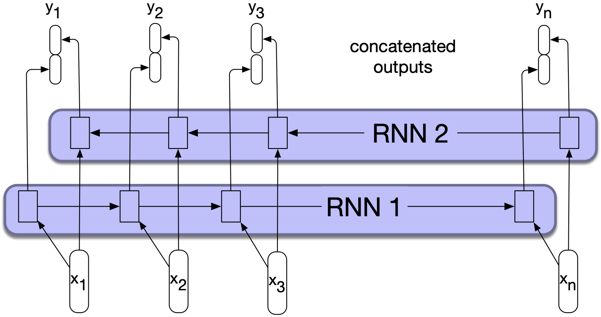
You can also use bidirectional RNNs for sequence classification.
Recall that in sequence classification we pass the final hidden state of the RNN as input to a subsequent feedforward classifier.
The problem with this approach is that the final hidden state reflects more information about the end of the sequence than its beginning.
Bidirectional RNNs provide a simple solution to this problem. We can create a final hidden state by combining hidden states of forward and backward passes so that the hidden state reflects information about both the beginning and end of the sequence.
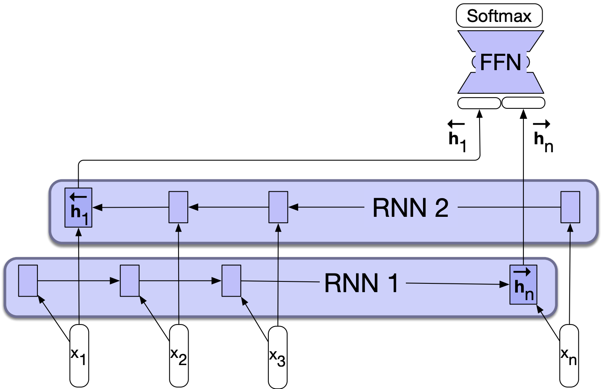
Final comments and summary#
Important ideas to know#
RNNs are supervised neural network models to process sequential data.
The intuition is to put multiple feed-forward networks together and making connections between hidden layers.
They have feedback connections in their structure to “remember” previous inputs, when reading in a sequence.
In simple RNNs sequences are processed one element at a time. The output of each neural unit at time \(t\) is based on the current input at \(t\) and the hidden layer at time \(t-1\).
RNNs share parameters across different time steps, making them efficient for modeling sequences.
They are trained using a generalized version of backpropagation called Backpropagation Through Time (BPTT).
In practice, we often use truncated BPTT, where we update the network using smaller chunks of the sequence.
There are many possible RNN architectures.
Standard RNNs struggle with long-distance dependencies due to issues like vanishing gradients.
To address this, more sophisticated variants such as LSTMs and GRUs are commonly used. These models follow the same general idea as RNNs but include additional components to better manage memory and information flow.
PyTorch provides built-in implementations of LSTMs and GRUs, which you can use directly instead of the basic RNN.
Coming up …#
Intuition of transformers
Resources#
Sequence processing with Recurrent Neural Networks (The notes above are heavily based on this resource.)